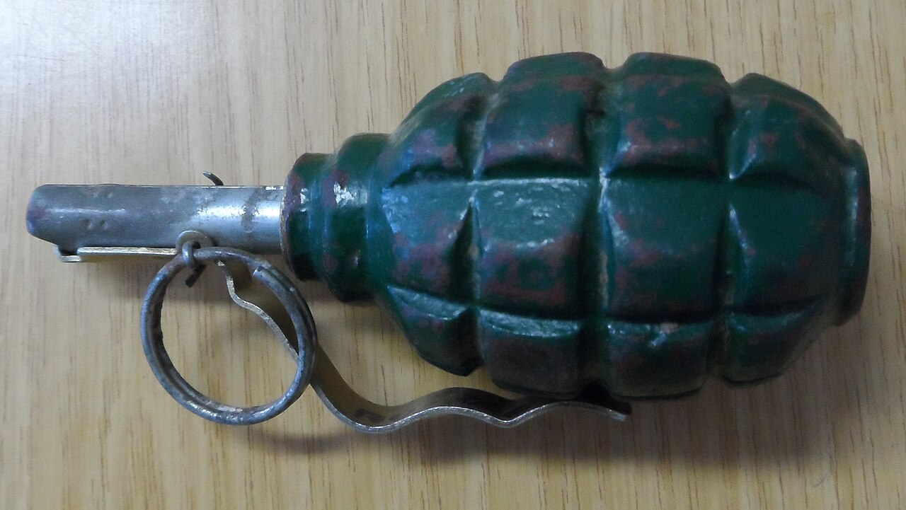

Граната түрлері, құрылысы, лақтыру тәсілдері және қауіпсіздік шаралары.Grenade types, design, throwing technique and safety rules.Виды гранат, устройство, приёмы метания и меры безопасности.

1 — жарылғыш заряд · 2 — корпус · 3 — рычаг · 4 — сақина мен предохранитель чек · траектория: жауынгерден нысанаға1 — bursting charge · 2 — body · 3 — lever · 4 — ring & safety pin · arc: from soldier to target/cover1 — разрывной заряд · 2 — корпус · 3 — рычаг · 4 — кольцо и предохранительная чека · дуга: от бойца к цели· Фото: Wikimedia Commons (Public domain)
Граната дегеніміз неWhat a Grenade IsЧто такое граната
Қол жарықшақты гранатасы — жарылыс кезінде пайда болатын жарықшақтармен қарсыластың тірі күшін жақын ұрыста зақымдауға арналған оқ-дәрі. Ол қолмен лақтырылады, сондықтан әсер ету қашықтығы лақтыру күшімен шектеледі. Граната екі негізгі топқа бөлінеді — шабуылдық және қорғаныстық; айырмашылық жарықшақтың ұшу радиусында. Құрылысын білу, запалдың жұмысын түсіну және лақтыру тәсілін дәл сақтау — өмір мен өлім мәселесі.A hand fragmentation grenade is munition designed to destroy enemy personnel in close combat with the fragments produced on detonation. It is thrown by hand, so its effective range is limited by the strength of the throw. Grenades fall into two main groups — offensive and defensive; the difference lies in the fragment-scatter radius. Knowing the design, understanding how the fuze works and following the throwing technique exactly is a matter of life and death.Ручная осколочная граната — боеприпас для поражения живой силы противника в ближнем бою осколками, образующимися при взрыве. Она бросается рукой, поэтому дальность поражения ограничена силой броска. Гранаты делятся на две основные группы — наступательные и оборонительные; разница в радиусе разлёта осколков. Знание устройства, понимание работы запала и точное соблюдение приёмов метания — вопрос жизни и смерти.
Граната түрлері және деректеріTypes and Data of GrenadesВиды и данные гранат
ТүріTypeТип
ГранатаGrenadeГраната
Негізгі деректерKey dataОсновные данные
ШабуылдықOffensiveНаступательная
РГД-5RGD-5РГД-5
массасы ≈ 310 г, жарықшақ ұшу радиусы ≈ 25 м, лақтыру қашықтығы 40–50 м — ашық жерден де лақтыруға боладыmass ≈ 310 g, fragment radius ≈ 25 m, throwing range 40–50 m — may be thrown from open groundмасса ≈ 310 г, радиус разлёта осколков ≈ 25 м, дальность броска 40–50 м — можно метать с открытой местности
ҚорғаныстықDefensiveОборонительная
Ф-1 («лимонка»)F-1 ("lemon")Ф-1 («лимонка»)
массасы ≈ 600 г, жарықшақ 200 м-ге дейін ұшады, лақтыру 35–45 м — тек паналаудан лақтырыладыmass ≈ 600 g, fragments fly up to 200 m, throw 35–45 m — thrown only from coverмасса ≈ 600 г, осколки летят до 200 м, бросок 35–45 м — метать только из укрытия
ЗаманауиModernСовременные
РГН / РГОRGN / RGOРГН / РГО
соққы-қашықтық әсерлі (УДЗ) запалы бар жаңа буын: жерге тигенде немесе ең көбі ≈ 3,2–4,2 с-та жарыладыnew generation with an impact/time (UDZ) fuze: detonates on impact or at ≈ 3.2–4.2 s at the latestновое поколение с ударно-дистанционным запалом (УДЗ): срабатывает при ударе о грунт или не позднее ≈ 3,2–4,2 с
тротил, жарылысты тудырадыTNT, produces the burstтротил, создаёт взрыв
Запал УЗРГМUZRGM fuzeЗапал УЗРГМ
жарылысты іске қосадыinitiates the detonationинициирует взрыв
Чека сақинасы мен рычагPin ring and leverЧека с кольцом и рычаг
соққы механизмін ұстайдыhold the striker in placeудерживают ударный механизм
УЗРГМ запалы үш бөліктен тұрады: соққы механизмі (ұрғыш, серіппе, чека, рычаг), баяулатқыш және детонатор. Чека суырылғаннан кейін рычаг босап, ұрғыш капсюльді шанышады; баяулатқыш 3,2–4,2 с жанады, содан соң детонатор негізгі зарядты жарады. Бұл уақыт — гранатаны лақтырып, паналауға ғана жетеді.The UZRGM fuze has three parts: a striker mechanism (striker, spring, pin, lever), a delay element and a detonator. After the pin is pulled the lever releases and the striker hits the primer; the delay burns for 3.2–4.2 s, then the detonator sets off the main charge. This time is just enough to throw the grenade and take cover.Запал УЗРГМ состоит из трёх частей: ударного механизма (ударник, пружина, чека, рычаг), замедлителя и детонатора. После выдёргивания чеки рычаг освобождается и ударник накалывает капсюль; замедлитель горит 3,2–4,2 с, затем детонатор подрывает основной заряд. Этого времени хватает лишь на то, чтобы метнуть гранату и укрыться.
Әрекет ету принципіPrinciple of ActionПринцип действия
Рычагты алақанмен қатты қыса отырып, чеканы сақинадан тартып суыру.Pull the pin out by the ring while pressing the lever firmly to the body with the palm.Выдернуть чеку за кольцо, плотно прижав рычаг ладонью к корпусу.
Лақтыру сәтінде рычаг ұшып кетеді, серіппелі ұрғыш босайды.At the moment of the throw the lever flies off and the spring-loaded striker is released.В момент броска рычаг отлетает, освобождая подпружиненный ударник.
Ұрғыш капсюль-тұтатқышты шанышады, баяулатқыш жана бастайды.The striker hits the primer-igniter and the delay element begins to burn.Ударник накалывает капсюль-воспламенитель, начинает гореть замедлитель.
3,2–4,2 с баяулаудан соң детонатор негізгі зарядты жарады → жарылыс пен жарықшақтар.After the 3.2–4.2 s delay the detonator sets off the main charge → detonation and fragments.Через 3,2–4,2 с замедления детонатор подрывает основной заряд → взрыв и осколки.
Лақтыру тәсілдеріThrowing TechniqueПриёмы метания
Гранатаны қолға алып, рычагты саусақпен корпусқа қатты қысу.Take the grenade and press the lever firmly against the body with the fingers.Взять гранату, плотно прижав рычаг пальцами к корпусу.
Бос қолмен сақинадан тартып чеканы суыру (рычагты жібермей).With the free hand pull the pin out by the ring (without releasing the lever).Свободной рукой выдернуть чеку за кольцо (не отпуская рычаг).
Сермеу қозғалысын жасап, дененің бұрылысымен күш беру.Make the swing, adding power with the turn of the body.Сделать замах, придавая силу поворотом корпуса.
Гранатаны нысанаға доға бойымен лақтыру.Throw the grenade at the target along an arc.Метнуть гранату в цель по дуге.
Дереу паналау: окопқа түсу немесе жату, басты қорғау.Take cover immediately: drop into the trench or lie down, protect the head.Немедленно укрыться: опуститься в окоп или лечь, защитить голову.
Қауіпсіздік шараларыSafety MeasuresМеры безопасности
Гранатаны тек жетекшінің командасы бойынша зарядтап, лақтыру.Prime and throw the grenade only on the officer's command.Снаряжать и метать гранату только по команде руководителя.
Ф-1 сияқты қорғаныстық гранатаны тек паналаудан (окоп, қалқа) лақтыру.Throw a defensive grenade like the F-1 only from cover (trench, shield).Оборонительную гранату (Ф-1) метать только из укрытия (окоп, заслон).
Чеканы лақтырар алдында ғана суыру; рычагты ешқашан босатпау.Pull the pin only just before throwing; never release the lever beforehand.Выдёргивать чеку только перед самым броском; рычаг заранее не отпускать.
Запалды бөлшектемеу, гранатаны соғуға, тастауға, отқа жақындатуға болмайды.Do not disassemble the fuze; do not strike, drop or bring the grenade near fire.Запал не разбирать; гранату не бить, не ронять, не подносить к огню.
Оқу (көк/қара жолақты) және жауынгерлік гранаталарды ешқашан шатастырмау.Never confuse training (marked) and live grenades.Учебные (с маркировкой) и боевые гранаты никогда не путать.
Жарылмаған гранатаны тимеу — белгілеп, орнынан кетіп, жетекшіге дереу баяндау.Do not touch a dud grenade — mark the spot, step away and report to the officer at once.Неразорвавшуюся гранату не трогать — обозначить, отойти и немедленно доложить руководителю.
Маңызды: чека суырылғаннан кейін лақтырудан бас тартуға болмайды — гранатаны дереу қауіпсіз бағытқа лақтырып, паналау керек. Лақтыру ережелерін мүлтіксіз сақтау — бұл өмір.Important: once the pin is pulled the throw must not be cancelled — throw the grenade away in a safe direction at once and take cover. Flawless observance of the throwing rules is life itself.Важно: после выдёргивания чеки отменить бросок нельзя — немедленно метнуть гранату в безопасном направлении и укрыться. Безупречное соблюдение правил метания — это жизнь.
НВП · АӘД · NVP
Плакат 14 / 30 · Бастапқы әскери дайындықPoster 14 / 30 · Basic Military TrainingПлакат 14 / 30 · Начальная военная подготовка